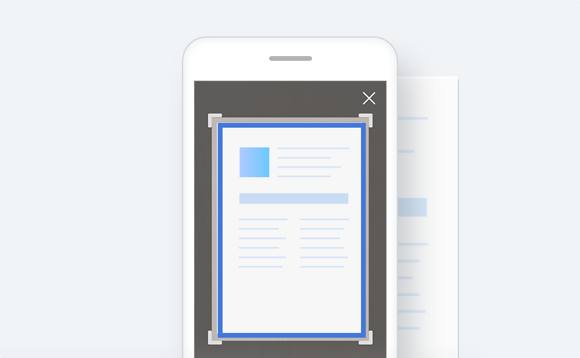
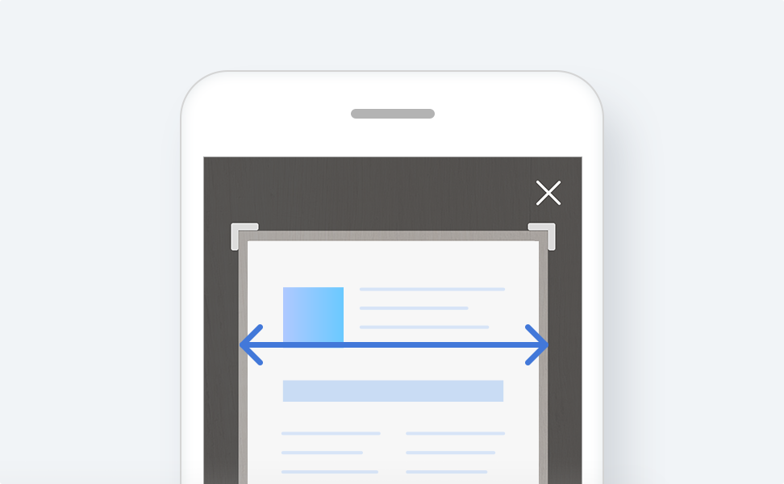

서류 촬영 가이드

1. 서류의 테두리가 파란색일 때 촬영해 주세요.
카메라가 서류를 인식하면 촬영버튼을 누르지 않아도 자동촬영모드가 작동해요.

2. 준비하신 문서를 최대한 크게 촬영해주세요.
서류가 화면에서 너무 작게 보이거나 흔들린 경우 재촬영 버튼을 눌러 다시 촬영해주세요.

3. 촬영하신 문서의 개수를 확인해주세요.
준비하신 문서와 촬영하신 문서의 개수가 동일한지 확인하신 후 완료 버튼을 터치해주세요.